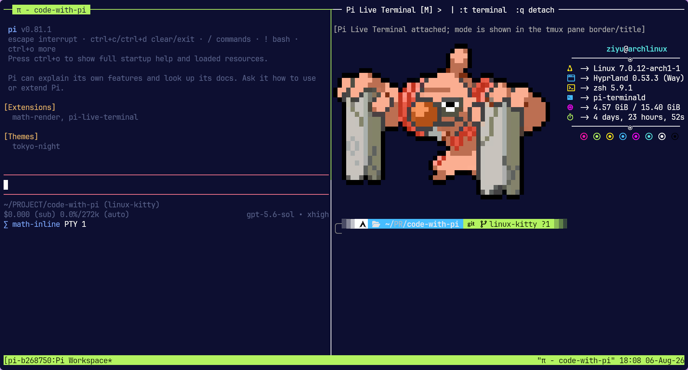

01 / ACTIVE EXPERIMENT · TERMINALS
code-with-pi
I wanted to see what a coding agent was actually doing in the shell without losing state between tool calls.
QuestionCan the agent and user attach to the same long-lived shell instead of observing separate command processes?
ImplementationA C11 broker owns PTY on Linux or ConPTY on Windows; Pi talks to it over authenticated local IPC, and tmux provides the Linux split view.
CheckedTests exercise state persistence, cancellation, transcript replay, resize, large output, installation, and Pi RPC execution.
